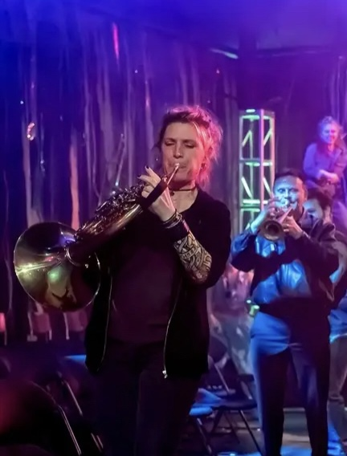
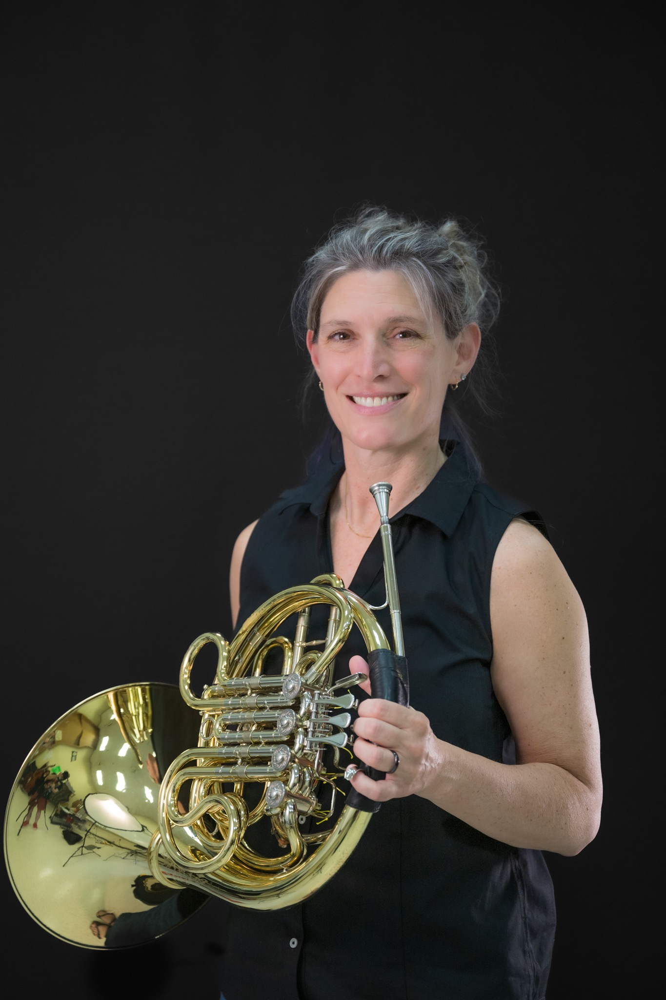
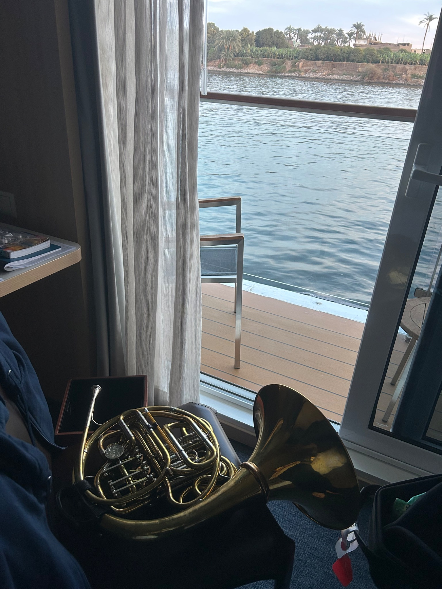

About
Amelia Fields is a professional French horn player whose career spans orchestral, chamber, touring, opera, and theatre performance. She has performed in principal and section roles across a wide range of ensembles, bringing a consistent level of musical precision and expressive depth to each setting.
Alongside her performance career, Amelia holds a degree in biology and is currently pursuing a Master of Oceanography at the University of Rhode Island. Her academic work focuses on ocean systems and conservation, with a growing interest in how sound—both musical and biological—can deepen understanding of marine environments.
While early in developing formal interdisciplinary projects, this foundation positions her to explore new work at the intersection of music, listening, and ocean science, including creative responses to whale song and environmental change.
Selected Images



Experience
- Principal Horn — Firebird Pops Orchestra
- Assistant Principal Horn — Ocean State Pops Orchestra
- Principal Horn — The Irish Tenors in Concert
- Principal Horn — Celtic Woman Symphony Christmas Tour
- Third Horn — Worcester Symphony
- Featured Soloist — Providence Adult String Ensemble, Haydn Horn Concerto in D major
- National Tours — Shrek the Musical; Monty Python’s Spamalot
- Regional theatre credits including Sweeney Todd, Les Misérables, Phantom of the Opera, Into the Woods, and more
- Opera Providence — La Traviata, Pirates of Penzance
- Lowell House Opera — Otello, Don Giovanni, Eugene Onegin, Carmen
- Recordings include Naughty Marietta and Utopia Limited
Music & Ocean Conservation
Amelia’s interest in ocean conservation is not a side note. It is part of the way she thinks about listening, resonance, and communication. With academic training in biology and graduate work in oceanography, she is especially interested in the relationship between sound and the marine world, including how music can help audiences connect more deeply with environmental change and marine life.
This perspective opens the door to artist talks, educational events, outreach partnerships, conservation-centered performances, and creative projects inspired by the ocean. It is also what makes this portfolio feel especially current: rooted in classical craft, but expansive enough to speak to larger questions about the world around us.
Contact
ami.fields@gmail.com
Rhode Island / Greater New England
A résumé is available for performance history, education, and selected credits.
Download CV